>
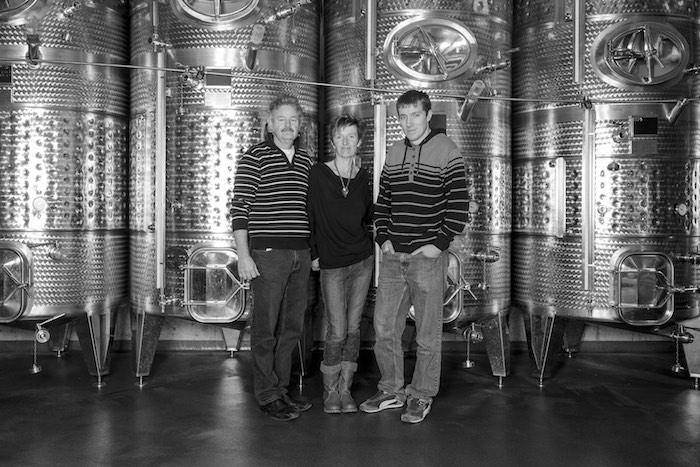
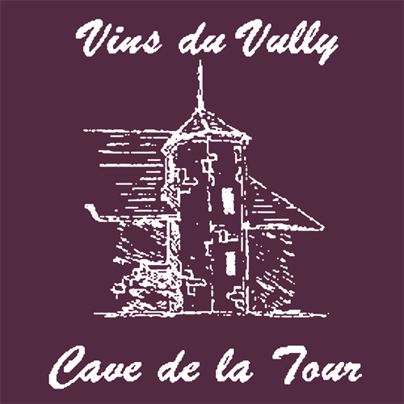
Jean-François, Jocelyne & Lionel Biolley
route du Lac 90
+41 (0)26 673 21 49
+41 (0)79 408 73 82
www.biolley-vins.ch
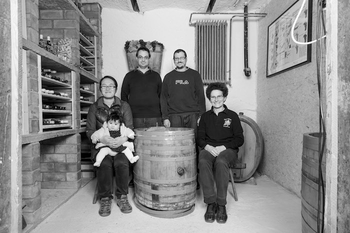
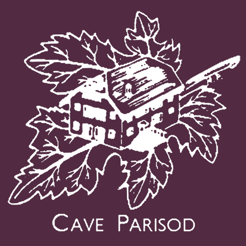
Sylvain & Murielle Parisod
Bellerive 14
+41 (0)26 677 12 68
+41 (0)79 515 26 09
www.parisod.com
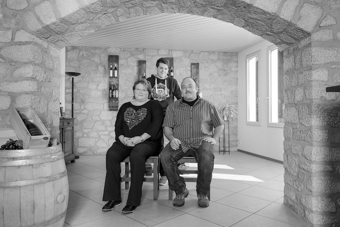
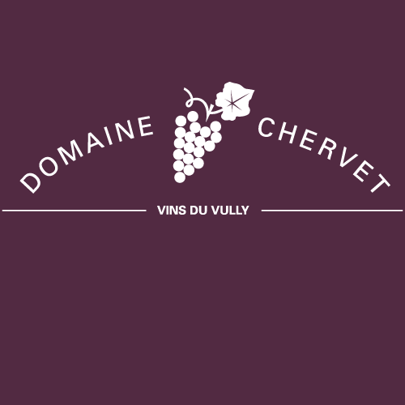
Jean-Daniel Chervet
ruelle des Gerles 6
+41 (0)26 673 17 41
www.domainechervet.ch
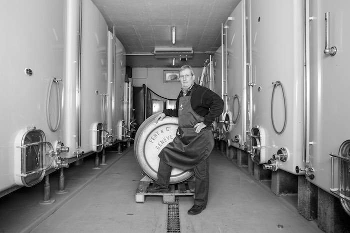
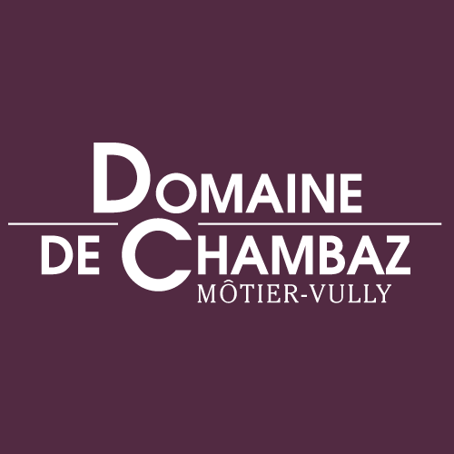
Francis Chautems
route du Lac 150
+41 (0)26 673 12 09
www.chautems-cave.ch
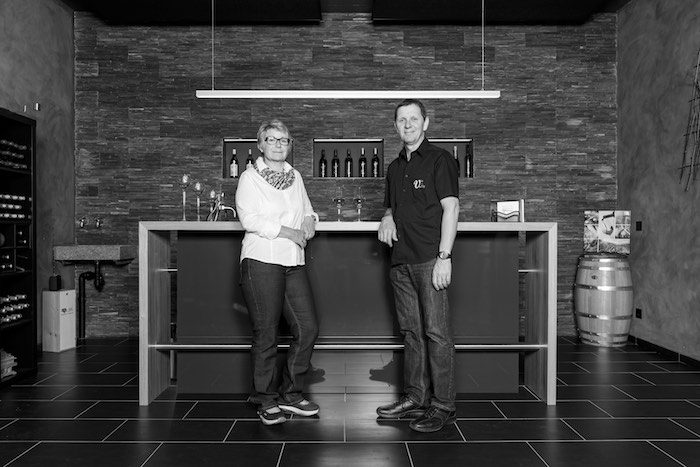
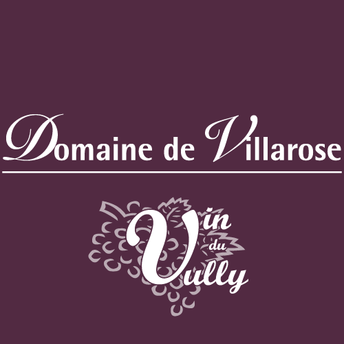
Alain & Patricia Besse
chemin de l’Aubel 6
+41 (0)26 673 12 40
+41 (0)79 658 34 41
www.domaine-de-villarose.ch
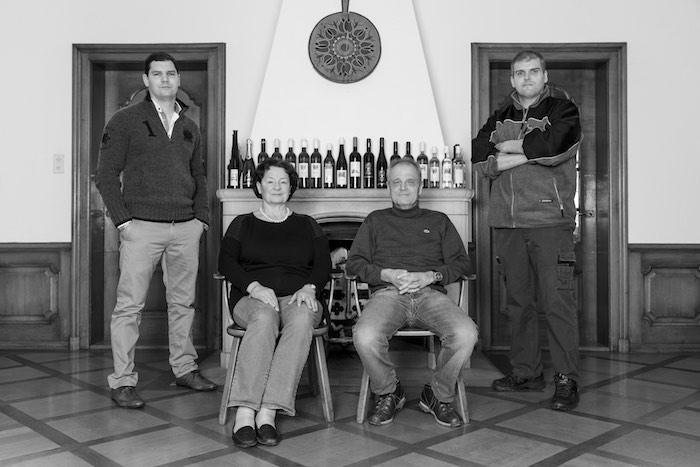
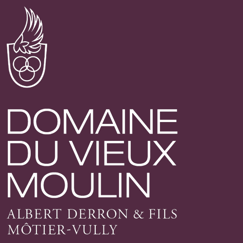
A. Derron & fils SA
ruelle des Vignerons 1
+41 (0)26 673 14 61
+41 (0)79 622 91 30
www.derronvins.ch
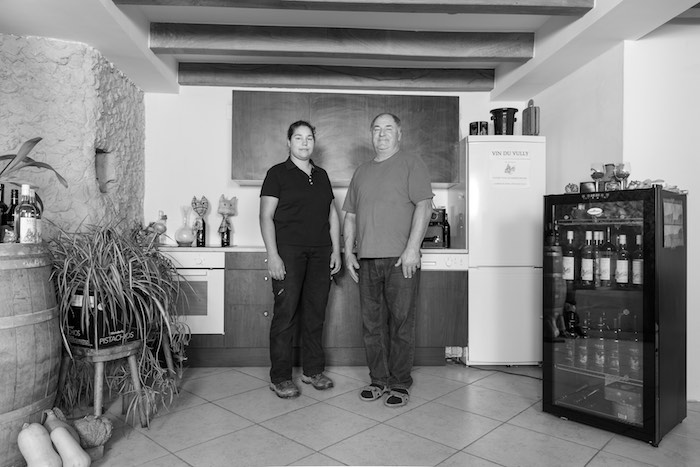
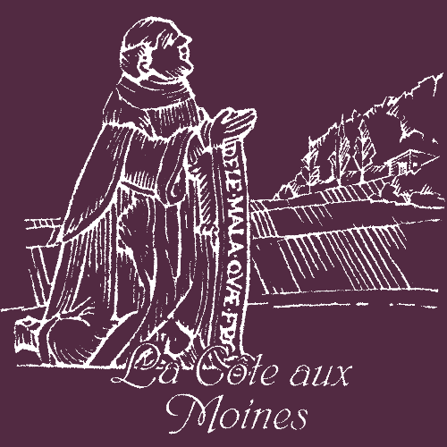
CAVE DE LA CÔTE AUX MOINES
Mary-Christine Christinat
route de la Croix 5
+41 (0)79 665 18 90
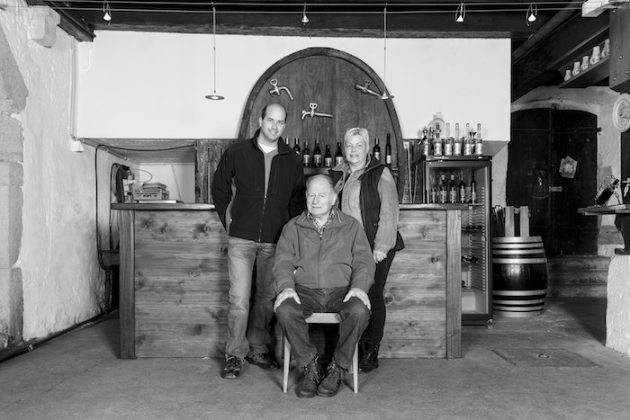
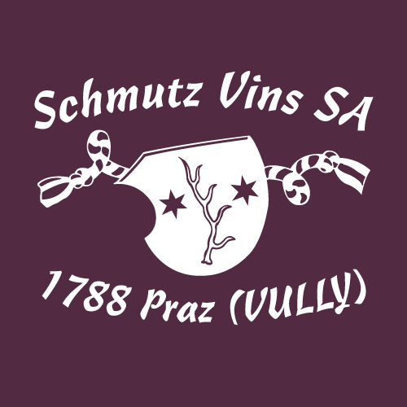
Christine & Sébastien Schmutz
route Principale · chemin des Stocks 6
+41 (0)26 673 24 60
+41 (0)79 486 54 19
www.schmutzvin.ch
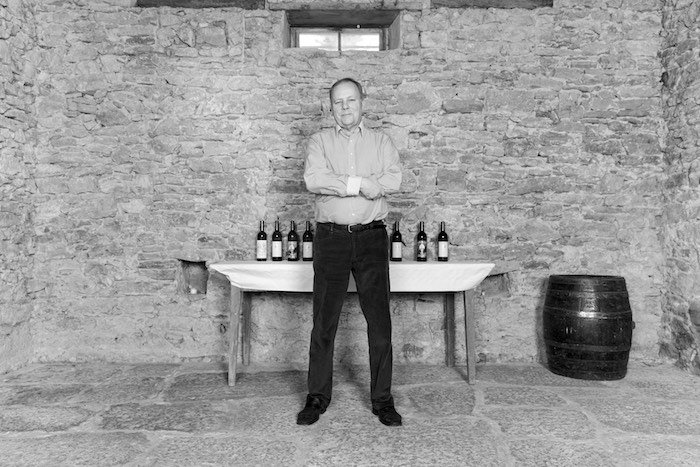
Renaud Burnier
route Principale 39
+41 (0)26 673 30 10
+41 (0)79 634 74 44
domaine.burnier@bluewin.ch
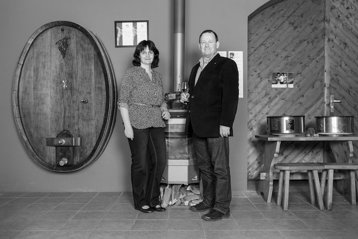
Pierre Gentizon
route du Village 14
+41 (0)26 677 13 64
+41 (0)79 230 73 58
www.gentizonvins.ch
BIENVENUE
Vignes, Vignerons, Vins, Caves, Encaveurs.

Le Vully est la plus petite des grandes régions viticoles de Suisse.
L'appellation d'origine contrôlée Vully est intercantonale.
C'est un cas unique en Suisse.